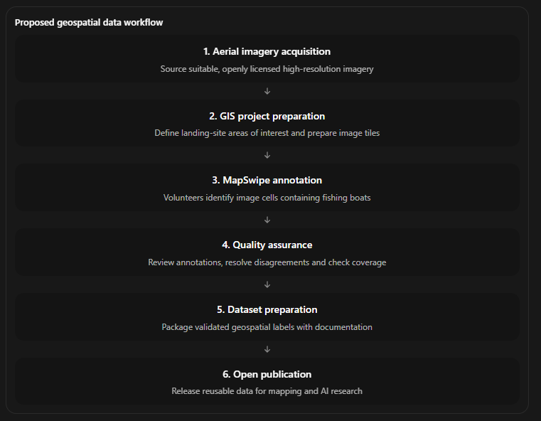
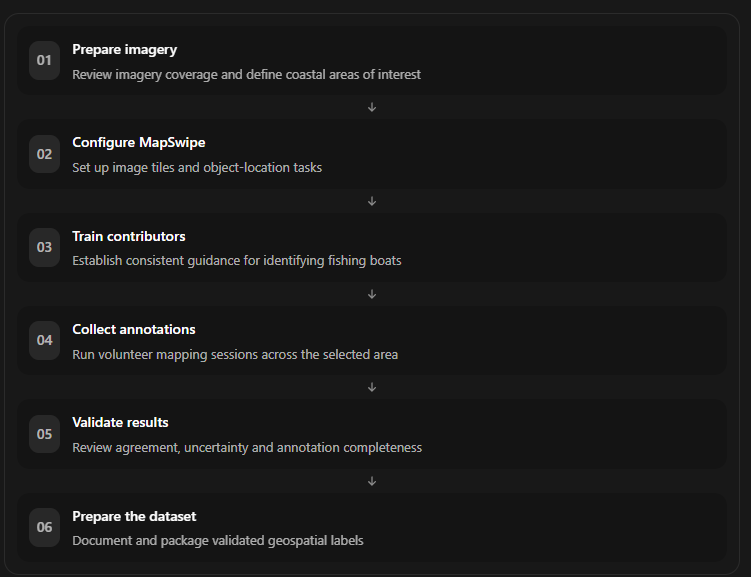
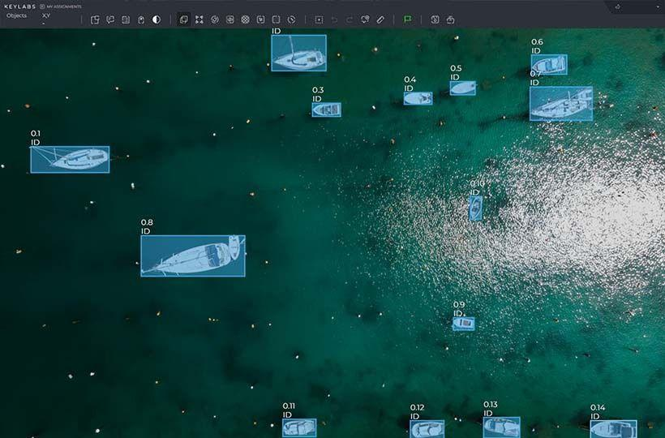

Illustrative coastal and fishing imagery supplied for this article. These photographs are not the OpenAerialMap source tiles reviewed for the project.
Mapping the small details that matter
Fishing boats are a familiar sight along the coast of Pemba Island, Tanzania. Traditional wooden dhows, outrigger canoes and motorised skiffs support fishing activities across coastal communities. Yet identifying these vessels consistently in openly accessible geospatial datasets remains a technical challenge.
High-resolution aerial photography provides an opportunity to address this gap. At sufficient spatial resolution, individual boats can be distinguished from beaches, shorelines, vegetation and surrounding infrastructure.
My current project, developed in the context of the Humanitarian OpenStreetMap Team (HOT) Map Your City with fAIr initiative, explores how openly licensed drone imagery, volunteer-based annotation and geospatial data validation can be combined to produce a dataset suitable for artificial intelligence applications.
The focus is on a practical question: How can we turn high-resolution aerial imagery into reliable, openly reusable annotations of small fishing vessels?
The approach brings together remote sensing, GIS, MapSwipe and structured quality assurance.

Working with high-resolution aerial imagery
Aerial imagery is the foundation of the proposed workflow.
During the initial feasibility assessment, I queried the OpenAerialMap catalogue to investigate the availability of drone imagery that could support detailed coastal feature identification.
The assessment identified imagery from Pemba Island captured between 2016 and 2018, with an approximate ground sampling distance of 7 centimetres and a CC BY 4.0 licence.
This level of spatial detail is promising for visually identifying individual boats, although actual detectability will depend on vessel size, image clarity, shadows, shoreline conditions and the quality of the source imagery.
The next technical consideration is preparing imagery for annotation. This involves checking spatial coverage, confirming coordinate reference systems, examining image quality and defining suitable areas of interest.
For coastal object mapping, these preparation steps are important because boats may appear in different contexts: pulled onto beaches, moored near landing sites or positioned close to other vessels.
A useful annotation workflow must account for these variations while maintaining consistency across the imagery.
From imagery to annotations with MapSwipe
The project proposes using MapSwipe to organize collaborative image annotation.
MapSwipe enables volunteers to contribute to humanitarian mapping by interpreting imagery through accessible mapping tasks. For this project, the intended approach is a Locate Objects workflow, in which contributors identify image cells containing fishing boats.
Instead of asking volunteers to digitize every vessel as a polygon, the initial annotation task focuses on identifying the presence and approximate location of target objects.
The proposed workflow is straightforward:

The target is to collect annotations covering at least 1,000 fishing boats, subject to the number of vessels visible within the selected imagery.
The completed imagery review recorded 1,032 sightings across 25 images. A conservative adjustment for overlapping footprints gives at least 1,019 distinct visible boats. These are visual counts, not completed boat-level annotations.
A key part of the methodology is covering the entire defined area of interest, rather than stopping once a sufficient number of positive samples has been collected. This can help preserve information about areas where no boats are identified.
Why annotation quality matters
The usefulness of an AI training dataset depends heavily on the reliability of its labels.
In aerial imagery, small boats can be difficult to distinguish from other coastal features. Shadows, partially obscured vessels, clustered boats and differences in image appearance can introduce uncertainty.
The proposed quality-assurance process therefore includes secondary review of volunteer annotations and closer inspection of tiles where contributors disagree.
For this project, three aspects of quality are particularly important:
- Consistency: Applying the same interpretation rules across contributors and image tiles.
- Completeness: Ensuring that all imagery within the defined area of interest is reviewed.
- Traceability: Maintaining clear documentation of the imagery, annotation process and validation decisions.
There is also an important distinction between MapSwipe localization labels and object-detection training annotations. Identifying a cell containing a boat does not necessarily provide a precise bounding box around the vessel.
Depending on the intended model architecture, additional annotation refinement may be required before the dataset can be used for object detection.
Connecting community mapping with GeoAI

One of the most interesting aspects of this project is the potential connection between community-generated annotations and machine learning.
The proposed dataset could provide a starting point for training or evaluating models designed to identify small fishing vessels in high-resolution imagery.
HOT's fAIr ecosystem provides a relevant context for exploring how locally generated training data can support AI-assisted mapping.
However, developing a model is not the same as producing a reliable training dataset. The immediate priority is to establish a reproducible process for obtaining, annotating and validating the imagery.
Any future model experiments would also need to consider the limitations of the data, including differences in vessel appearance, image acquisition conditions and the age of the imagery.
Because the identified aerial photography dates from 2016–2018, the resulting annotations would describe vessels visible at the time of image capture, not a current inventory of active fishing boats.
Organizing the mapping work
Beyond the GIS and remote sensing components, the project requires coordination of imagery preparation, volunteer participation, validation and dataset documentation.
The implementation approach is structured around four phases.
| Phase | Main activities |
|---|---|
| Imagery and GIS preparation | Verify imagery, define areas of interest and configure the annotation workflow |
| Volunteer mapathons | Train contributors and coordinate MapSwipe sessions |
| Validation and dataset preparation | Review annotations, resolve disagreements and prepare data outputs |
| Documentation and handover | Publish methodology, report results and prepare the dataset for reuse |
The project proposal includes three to four volunteer mapping sessions and a final validation and publication stage.
The goal is not only to generate labels, but to document a process that other geospatial practitioners can understand, evaluate and potentially reproduce.
What this project aims to contribute
The intended outputs include a completed MapSwipe annotation project, a validated geospatial dataset of fishing-boat observations and supporting documentation covering the methodology and quality-control procedures.
If the workflow proves successful, it could provide useful experience for similar object-mapping tasks in other coastal environments.
The potential value extends beyond identifying fishing boats. It lies in demonstrating how accessible annotation tools, openly licensed aerial photography and careful geospatial data management can support the development of locally relevant AI training datasets.
Looking ahead
The next stages of the project will focus on confirming usable imagery coverage, preparing the mapping area, establishing annotation guidelines and implementing the volunteer mapping workflow.
As the work progresses, I plan to document the technical decisions, challenges and results, including how the annotations are validated and prepared for downstream use.
For me, this project represents an intersection of several areas of geospatial practice: remote sensing, aerial image interpretation, participatory mapping, GIS data quality and emerging GeoAI applications.
The central objective is to move from imagery to dependable geographic information through a transparent, reproducible workflow.
That is where the practical value of geospatial technology begins.
Erick Mulama Shituku is a GIS and Remote Sensing specialist with more than 11 years of professional experience across East Africa. His work spans marine spatial planning, environmental monitoring, geospatial analysis and the development of spatial information systems.